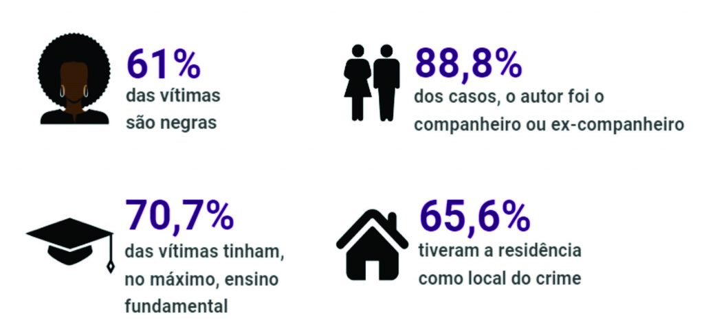

De acordo com o art. 5º da Lei Maria da Penha, violência doméstica e familiar contra a mulher é “qualquer ação ou omissão baseada no gênero que lhe cause morte, lesão, sofrimento físico, sexual ou psicológico e dano moral ou patrimonial”.
A violência contra as mulheres se manifesta de diversas formas. De fato, o próprio conceito
definido na Convenção de Belém do Pará (1994) aponta para esta amplitude, definindo violência
contra as mulheres como “qualquer ação ou conduta, baseada no gênero, que cause morte, dano ou
sofrimento físico, sexual ou psicológico à mulher, tanto no âmbito público como no privado”
(Art. 1°). Além das violações aos direitos das mulheres e a sua integridade física e
psicológica, a violência impacta também no desenvolvimento social e econômico de um
país.
A violência atinge mulheres e homens de formas distintas. Grande parte das violências cometidas
contra as mulheres é praticada no âmbito privado, enquanto que as que atingem homens ocorrem, em
sua maioria, nas ruas. Um dos principais tipos de violência empregados contra a mulher ocorre
dentro do lar, sendo esta praticada por pessoas próximas à sua convivência, como maridos/esposas
ou companheiros/as, sendo também praticada de diversas maneiras, desde agressões físicas até
psicológicas e verbais. Onde deveria existir uma relação de afeto e respeito, existe uma relação
de violência, que muitas vezes é invisibilizada por estar atrelada a papéis que são
culturalmente atribuídos para homens e mulheres. Tal situação torna difícil a denúncia e o
relato, pois torna a mulher agredida ainda mais vulnerável à violência. Pesquisa revela que,
segundo dados de 2006 a 2010 da Organização Mundial de Saúde, o Brasil está entre os dez países
com maior número de homicídios femininos. Esse dado é ainda mais alarmante quando se verifica
que, em mais de 90% dos casos, o homicídio contra as mulheres é cometido por homens com quem a
vítima possuía uma relação afetiva, com frequência na própria residência das mulheres.
Desde que a Lei do Feminicídio (13.104/15) entrou em vigor, em 2015, o número de casos
registrados pela Segurança Pública aumentou 62,7%.
Segundo a lei, o feminicídio prevê situações em que a vítima é morta em decorrência de
violência
familiar ou doméstica. Também é feminicídio se o assassinato ocorrer por discriminação
ou
menosprezo ou à condição de mulher.
Segundo dados do 13º Anuário Brasileiro de Segurança Pública, , os feminicídios
corresponderam a
29,6% dos homicídios dolosos de mulheres em 2018. Foram registrados 1.151 casos em 2017
e 1.206
em 2018, um crescimento de 4% nos números absolutos.

A violência contra as mulheres é uma chaga que assola nossa sociedade, mas não podemos
nos
resignar diante desse cenário. É fundamental que cada um de nós se engaje na luta contra
essa
violência, promovendo a conscientização, denunciando casos e apoiando as vítimas.
A construção de uma sociedade mais justa e igualitária passa pela erradicação da
violência de
gênero. É preciso desconstruir estereótipos, educar nossas crianças e jovens para o
respeito
mútuo e garantir que as leis de proteção às mulheres sejam efetivamente aplicadas.
Além disso, é essencial fortalecer as redes de apoio e as organizações que trabalham
incansavelmente para combater a violência contra as mulheres.
Essas instituições desempenham um
papel fundamental na assistência às vítimas, na conscientização da sociedade e na busca
por
políticas públicas eficazes.
Cabe a cada um de nós ser um agente de mudança, disseminando valores de igualdade,
respeito e
empatia. Juntos, podemos criar um ambiente seguro e acolhedor para todas as mulheres,
onde elas
possam exercer seus direitos e viver livres de violência.
Não podemos mais tolerar a violência contra as mulheres. É hora de agir, de unir forças
e de
construir um futuro onde todas as mulheres sejam respeitadas, protegidas e valorizadas.
A
mudança começa em cada um de nós. Vamos juntos combater a violência e construir um mundo
melhor
para todas as mulheres.